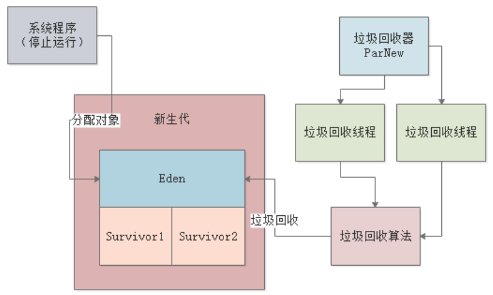

ParNew是目前最常用的JVM垃圾回收器之一，主要应用在新生代的GC中。ParNew采用了多线程垃圾回收机制，ParNew垃圾回收器在执行Minor GC时，会将JVM中的工作线程全部停止掉，禁止程序在运行时创建新的Java对象，然后自己用多个垃圾回收线程去进行垃圾回收，回收的机制和算法跟前面章节介绍的一样。

通过JVM的参数设置，可以显式指定使用ParNew作为新生代的垃圾回收器。-XX:+UseParNewGC，只要加入这个选项，JVM启动之后就会使用ParNew进行新生代的垃圾对象回收。
默认情况下，ParNew设置的回收线程数与机器的CPU核心数相同。也就是说，假如我们线上的机器是8核，那么此时ParNew的垃圾回收线程数就是8个。比如下图，每个GC线程都通过一个CPU在运行：
线程数一般不需要手动设置，保持跟CPU核心数一致就可以充分进行并行处理。假如一定要手动设置，则使用
-XX:ParallelGCThreads参数设置。
我们上一章还提到过一种垃圾回收器——Serial，Serial是一种单线程的垃圾收集器，生产环境的服务端应用基本不会使用该收集器，但是有一类Java应用还是可能会用到Serial，即客户端Java应用，比如百度云盘的Windows客户端、印象笔记的Windows客户端等等。
由于客户端Java应用一般运行在PC上，且很多PC还是单核的，所以如果采用ParNew进行垃圾回收，就会导致一个CPU运行多个线程，此时会出现频繁的上下文切换，反而加重了性能开销，可能效率还不如单线程好。
所以，在使用ParNew作为生产环境的垃圾回收器时，记得使用-server指定为服务端模式。